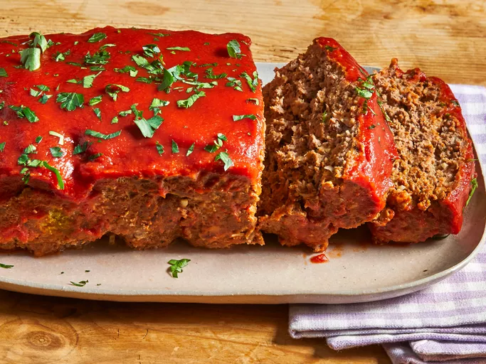

Odin Recipes
Home
Meatloaf

Description
Meatloaf is a classic American dish that is not only cheap and easy to make, it's a satisfying main dish that can feed a family. It's found everywhere from everyday dinner tables to high-end restuarants.
Yields: 1 Meatloaf
Prep Time:15 min
Cook Time: 1 hr 15 min
Total Time: 1 hr 25 min
Ingredients
- 1 Tbsp. butter
- 1/4 cup minced onion
- 2 cloves garlic, minced
- 1 1/2 Tsp. salt
- 1 1/2 Tsp. freshly ground black pepper
- 2 lb. extra-lean ground beef
- 3 slices bread, toasted and crumbled
- 7 buttery round crackers, crushed
- 1 egg, lightly beaten
- 3 1/2 Tbsp. sour cream
- 1 1/2 Tbsp. Worcestershire sauce
- 1 (15 oz.) can tomato sauce, divided
- 1/4 cup milk, or as needed (optional)
- 3 Tbsp. ketchup
Directions
- Preheat the oven to 350°F. Gather all ingredients
- Melt butter in a skillet over medium heat, and cook onion and garlic until garlic is soft and translucent, about 5 minutes. Remove from heat, and season with salt and pepper.
- Combine onion and garlic mixture, beef, crumbled bread, crushed crackers, egg, sourcream, Worcestershire sauce, and 1/2 can tomato sauce ina large bowl. Mix until well combined. Gradually stir in milk, 1 teaspoon at a time, until the mixture is moist, but not soggy
- Transfer the mixture to a 5x9-in loaf pan. Bake uncovered in the over for 40 minutes. Increase oven temp to 400°F. Continue baking for 15 mintues, to an internal temperature of 160°F.
- Mix the remaining tomato sauce and ketchup in a small bowl. Pour over the top of the meatloaf, and contine baking for 10 mintues.
- Serve hot and enjoy!
Source: Allrecipes